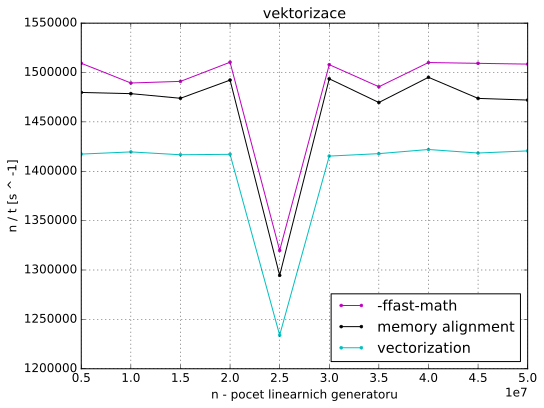

Mějme několik G daných
lineárních generátorů, každý z nich je dán parametry a, b, n. Generátor
vypočítává posloupnost x[i] = (a * x[i - 1] + b) mod 2 ^ n, kde a a b
jsou kladná lichá čísla, 10 < n < 32 a x[0] = 0. Počet členů této
posloupnosti je k (pro všechny generátory stejné). Úkolem je pro dané
konstanty c, d, e (pro všechny generátory stejné), najít:
x[i] v intervalu [c, d]x[i] a parametrem eSekvenci algoritmus se sklada ze dvou for cyklu. Vnejsi cyklus iteruje
pres vsechny linearni generatory G. G jsou ulozeny ve
dvourozmernem poli. V kazdem radku je trojice uint32_t cisel a, b a
n.
/* for each linear generator */
for (size_t i = 0; i < num; ++i) {
a = linear_generators[i][0];
b = linear_generators[i][1];
n = linear_generators[i][2];
x = 0;
count = 0;
min = UINT32_MAX;
max = 0;
Vnitrni cyklus pocita a zkouma jednotlive cleny posloupnosti x[k]
linearniho generatoru.
for (size_t j = 0; j < k; ++j) {
/* compute next value */
x = lin_gen(a, x, b, n);
/* check if x is in interval */
if (is_in_interval(x, c, d))
++count;
/* compute hamming distance */
dist = hamming_distance(x, e);
/* check minimal hamming distance */
if (min > dist)
min = dist;
/* check maximal hamming distance */
if (max < dist)
max = dist;
}
/* use computed values so compiler does not exclude them */
fprintf(stderr, "%" PRIu32 "%" PRIu32 "%" PRIu32, count, min, max);
}
lin_gen() pocita nasledujici clen posloupnosti. Pro umocneni
2 ^ n pouzivam operaci bitovy posun.
uint32_t lin_gen(uint32_t a, uint32_t x, uint32_t b, uint32_t n) {
/* don't care about overflow */
return (a * x + b) % (2 << (n - 1));
}
is_in_interval() provede dve porovnani a vrati true
pokud je x v zadanem intervalu jinak false.
bool is_in_interval(uint32_t x, uint32_t start, uint32_t end) {
return start <= x && x <= end;
}
hamming_distance() implementuje algoritmus pro ziskani
Hammingovy vzdalenosti z bitoveho or (^) promennych x a e
postupnym odebiranim bitu ve while cyklu. Tato implementace je datove
zavisla. Presto budu generovat data nahodne. Po optimalizacich bude
tato zavislost odstranena.
uint32_t hamming_distance(uint32_t x, uint32_t y) {
uint32_t distance = 0;
uint32_t xor_val = x ^ y;
while (xor_val) { /* count the number of bits set */
++distance; /* a bit is set increment the counter */
xor_val &= xor_val - 1; /* remove the counted bit */
}
return distance;
}
Pro kompilaci programu pouzivam kompilator gcc. Zakladni kompilace pouziva prepinace:
g++ -std=c++11 -march=ivybridge -O3 ...
-march=ivybridge zajisti kompilovani kodu pro vypocetni svazky Intel Xeon
2620 v2 @ 2.1Ghz. Nastaveni jsem zjistil prikazem:
gcc -march=native -Q --help=target | grep march
-march= ivybridge
V nasledujici casti popisu optimalizece programu a analyzuji jejich dopad na vykonost.
Vlozenim kodu funkci v neziskam zadne zrychleni, protoze -O3
nastaveni kompilatoru provede inlining automaticky.
Kod pro vypocet Hammingovy vzdalenosti je neefektvni, netrva konstatni dobu. Efektivnejsi implementace je pomoci population count:
dist = x ^ e;
dist = dist - ((dist >> 1) & 0x55555555);
dist = (dist & 0x33333333) + ((dist >> 2) & 0x33333333);
dist = (((dist + (dist >> 4)) & 0x0F0F0F0F) * 0x01010101) >> 24;
Tento algoritmus vypocita Hammingovu vzdalenost 32 bitoveho integeru
(uint32_t) v konstantnim case. Program se zrychli v prumeru ctryrikrat.

Program nevyuziva vektorovych instrukci. Podporu tech instrukci
pri kompilaci zapneme prepinacem -mavx.
V generovani vektorovych instrukci brani kompilatoru datova zavislost x na
predchozi iteraci:
x = ((a * x + b) % (2 << (n - 1)));
Transformace loop interchange odstrani tuto zavislost. Vnejsi cyklus bude
iterovat pres cleny posloupnosti x[i] a vnitri cyklus pres vsechny
linearni generatory.

Vysledny kod viz nize. Parametry linernich generatoru ukladam v jednorozmernych polich.
for (size_t i = 0; i < k; ++i) {
/* for each linear generator */
for (size_t j = 0; j < num; ++j) {
/* compute next value */
x[j] = ((a[j] * x[j] + b[j]) % (2 << (n[j] - 1)));
/* check if x is in interval */
if (c <= x[j] && x[j] <= d)
count[j] += 1;
/* compute hamming distance */
dist = x[j] ^ e;
dist = dist - ((dist >> 1) & 0x55555555);
dist = (dist & 0x33333333) + ((dist >> 2) & 0x33333333);
dist = (((dist + (dist >> 4)) & 0x0F0F0F0F) * 0x01010101) >> 24;
/* check minimal hamming distance */
if (min[j] > dist)
min[j] = dist;
/* check maximal hamming distance */
if (max[j] < dist)
max[j] = dist;
}
}
Kompilator ani tento kod nedokaze vektorizovat. Vypis prepinace
-fopt-info-vec-all gcc:
not vectorized: control flow in loop.
if podminky brani vektorizaci. Misto nich pouziji ternarni neboli min a
max operatory.
count[j] += (c <= x[j] && x[j] <= d) ? 1 : 0;
min[j] = (min[j] < dist) ? min[j] : dist;
max[j] = (max[j] > dist) ? max[j] : dist;
Nyni kompilator hlasi problem s aliasingem:
number of versioning for alias run-time tests exceeds 10
Muj program pristupuje ke kazdemu poli prave jednim ukazatelem. Aliasing
vyloucim pridanim klicoveho slova __restrict__ k pointerum. Pro
snadnejsi implementaci vytvorim pro vypocet vlastni funkci opt_computation()
s nasledujici definici:
void opt_computation(
uint32_t num,
uint32_t k,
uint32_t c,
uint32_t d,
uint32_t e,
uint32_t *__restrict__ a,
uint32_t *__restrict__ b,
uint32_t *__restrict__ n,
uint32_t *__restrict__ x,
uint32_t *__restrict__ min,
uint32_t *__restrict__ max,
uint32_t *__restrict__ count
);
Kompilator stale nemuze program vektorizovat kvuli nepodporovane operaci.
not vectorized: relevant stmt not supported: _30 = 2 << _29;
V kodu se zbytecne dokola pocita hodnota 2 ^ n, ktera se v prubehu vypoctu
nemeni. Pomoci transformace loop fision ji vypocitam pred hlavnimi
for cykly.
for (size_t j = 0; j < num; ++j)
n[j] = 2 << (n[j] - 1);
for (size_t i = 0; i < k; ++i) {
for (size_t j = 0; j < num; ++j) {
x[j] = (a[j] * x[j] + b[j]) % n[j];

AVX nepodporuje ani modulo operator:
not vectorized: relevant stmt not supported: _40 = _37 % _39;
Modulo nahradim nasobenim inverzi cisla. Pole n prevest z datoveho typu
uint32_t na float a upravim provadene operace.
for (size_t j = 0; j < num; ++j)
n[j] = 1.f / std::exp2(n[j]);
for (size_t i = 0; i < k; ++i) {
for (size_t j = 0; j < num; ++j) {
x[j] = a[j] * x[j] + b[j];
x[j] -= ((uint32_t)(x[j] * n[j])) * n[j];
Konecne kompilator vnitrni cyklus vektorizuje:
loop vectorized
Podle kompilatoru je velikost pouziteho vektoru 4. Take v asembleru jsou pouzity xmm registry a ne ymm registry. To znamena, ze jedna operace se provadi se ctyrmi 32 bitovymi integery (dohromady 128 bitu). AVX ma registy 256 bitove, ale pro integerove operace podporuje pouze 128 bitove operace.
Vektorizovany program je nejvykonnejsi ze vsech, prestoze se zvysil pocet operaci ve zdrojovem kodu.

-ffast-mathDale optimalizuji zarovnani poli v pameti. Kompilator vedle hlasky o vektorizaci zobrazuje:
loop peeled for vectorization to enhance alignment
Pole alokuji 32 bajtove zarovnane podle doporuceni v
Introduction to Intel AVX.
Pouziji funkci aligned_alloc() a kompilatoru predam tuto informaci funkci
__builtin_assume_aligned(). Vzorovy kod pro alokaci pole a:
*a = (uint32_t *)aligned_alloc(32, num * sizeof(uint32_t));
Ve funkci opt_computation():
a = (uint32_t *)__builtin_assume_aligned(a, 32);
Program provadi nektere operace s cisli v plovouci radove carce. Operace s nimi
muzu zrychlit prepinacem -ffast-math.

GCC podporuje moznost vygenerovani profilovacich dat a jejich pouziti pro optimalizaci generovani kodu.
Profilovaci data jsem vygeneroval prepinacem -fprofile-generate na
50000000 linearnich generatorech. Program kompilovany s -fprofile-use
(data se pouziji pri kompilaci) bohuzel zhorsi rychlost vypoctu.

Pro mereni vypadku cache pouziji knihovnu PAPI. Pomoci PAPI mohu na cilove
architekture merit datove vypadky L1 cache (PAPI_L1_DCM), datove vypadky
a pristupy L2 cache (PAPI_L2_DCM a PAPI_L2_DCA resp.).
#ifdef PAPI
#include <papi.h>
#define NUM_EVENTS 3
#endif
...
#ifdef PAPI
int Events[NUM_EVENTS] = { PAPI_L1_DCM, PAPI_L2_DCM, PAPI_L2_DCA };
long_long values[NUM_EVENTS];
/* start counting events */
if (PAPI_start_counters(Events, NUM_EVENTS) != PAPI_OK)
return 0;
#endif
opt_computation(num, k, c, d, e, a, b, n, x, min, max, count);
#ifdef PAPI
/* Stop counting events */
if (PAPI_stop_counters(values, NUM_EVENTS) != PAPI_OK)
return 0;
fprintf(stdout, "%lld ", values[0]);
fprintf(stdout, "%lld ", values[1]);
fprintf(stdout, "%lld ", values[2]);
#endif
Pri kompilaci je treba pouzit prepinace:
-L/usr/lib64-lpapi-DPAPI-I/usr/includeTakto upraveny program dosahuje vyuziti cache na grafu dole.

V idealnim pripade je potreba optimalizovat program tak, aby do L1 cache nahraval spravne mnozstvi linearnich generatoru a s nimi provedl k iteraci bez L1 vypadku.
Technikou loop tiling muzu tohoto castecne dosahnout.
/* loop tiling - main */
for (size_t j1 = 0; j1 < num - BF; j1 += BF) {
for (size_t i = 0; i < k; ++i) {
for (size_t j = 0; j < BF; ++j) {
...
}
}
a += BF;
b += BF;
x += BF;
n += BF;
min += BF;
max += BF;
count += BF;
}
/* loop tiling - the rest */
for (size_t i = 0; i < k; ++i) {
for (size_t j = 0; j < num % BF; ++j) {
...
}
}
Do L1 cache pameti by mel program nahrat BF linearnich generatoru. S nimi
provest vypocty a na konci dopocitat zbytek ktery se tak do L1 cache
pameti vejde.
Pouziti pointerove aritmetiky zaruci, ze vnitrni cykly mohou iterovat od 0. To umozni auto-vektorizaci obou nejvnitrnijsich cyklu.
Problem je urcit hodnotu BF. Nepodarilo se mi zjistit velikost cache pameti
nasi architekturi. Predpokladam velikost 512 radek a stupen asociativity
2 (jak je uvedeno v prednasce). Muj program pouzivar 7 poli, ktere bude cist po
blocich. To znamena ze muze nahrat 512 * 2 = 1024 bloku. 1024 / 7 =
146.2857 je kandidat pro BF. Hodnota snizim na 144, aby byla delitelna 4
(vyhodne pro vektorizaci).
Merenim se ukazalo ze nejvyhodnejsi je BF = 72 (#define BF 72 v kodu):

Spravne vyuziti cache pameti opravdu program zrychli.

Pri technice loop unrolling s faktorem rozbaleni 2 kompilator hlasi:
not vectorized: complicated access pattern.
Bez vektorizace by byl program neefektivni, a proto je tuto techniku nevhodne pouzit.